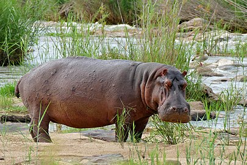

სხეულის სიგრძეა 4,0–4,5 მეტრი, კუდისა — 34–50 სმ, სიმაღლე მინდაოში 165 სმ-მდე, მასა 1,3–3,2 (4,5-მდე) ტონა. მამალი მნიშვნელოვნად აღემატება დედალს. სხეული კასრისებრი ფორმის და ჯმუხია; თავი მასიური, თითქმის უკისრო;[1] დინგი განიერი; ყურები მოკლე; თვალები პატარა; ფეხები მოკლე, მსხვილი და ოთხთითა, თითებს შორის მცირე ზომის საცურავი აპკებია. კანი თითქმის ტიტველია.[2] ამ სქელი კანის ქვეშ აქვს 5 სმ-მდე სისქის ქონის ფენა. შეფერილობა სპილენძისფერიდან მუქ ყავისფრამდე. კანის ჯირკვლები გამოიმუშავებენ მოწითალო სეკრეტს (ე.წ. სისხლიანი ოფლი), რომელიც კანის ზედა შრეებს წყალში გაჟღენთისაგან იცავს. საჭრელი კბილები და ეშვები (შუანი) მუდმივად ეზრდება. კუჭი სამგანყოფილებიანია.[1]  გავრცელებულია აფრიკაში, საჰარიდან სამხრეთით, კონტინენტის სამხრეთი ნაწილის გარდა; შემორჩენილია უმეტესად ეროვნულ პარკებში. ბინადრობს წყალსატევებში, რომლებსაც აქვს ყურეები და დაჭაობებული ლერწმიანი ნაპირები. დღის უდიდეს ნაწილს წყალში ატარებს, მისი ზედაპირიდან მხოლოდ თვალები, ნესტოები და ყურები აქვს ამოწეული; ჩაყვინთვის დროს კანის ნაკეცებით ხურავს ნესტოებსა და ყურებს. წყალქვეშ 5 წუთამდე ჩერდება, შეუძლია ფსკერზე სიარული. ცხოვრობს მცირე ჯგუფებად ან ჯოგებად (30 სულამდე), ბებერი მამლები — მარტოსულად. აქტიურია ღამით. ძირითადად იკვებება წყლის მცენარეულობით, ზოგჯერ საბალახოდ ველებზე გადის. საკვების ძიებაში, როგორც წესი, ნაპირს 300 მეტრზე მეტით არ სცილდება, თუმცა ზოგჯერ 30 კმ-მდეც მიდის.[1] გამრავლება მთელი წლის განმავლობაში ახასიათებთ. მასიური შობადობა ივნის-სექტემბერშია; ამ დროს მამლებს შორის სასტიკი ორთაბრძოლები იმართება.[1] მაკეობა გრძელდება 8 თვე.[2] ბადებს 1, იშვიათად 2 ნაშიერს; ახალშობილი 35–40 კგ-ს იწონის, მაშინვე შეუძლია სიარული და ცურვა.[1] ტყვეობაში მრავლდება.[2] სიცოცხლის ხანგრძლივობა 40–50 წელია.[1] ხორცის, ტყავისა და ქონის გამო, დიდი ხნის განმავლობაში იყო მოპოვების ობიექტი; დღეს მასზე ნადირობა აკრძალულია.[1] შეტანილია ბუნების დაცვის საერთაშორისო კავშირის წითელ ნუსხაში, როგორც მოწყვლადი სახეობა, და CITES-ის II დანართში.[3]
ზღვის ლომი ლომი